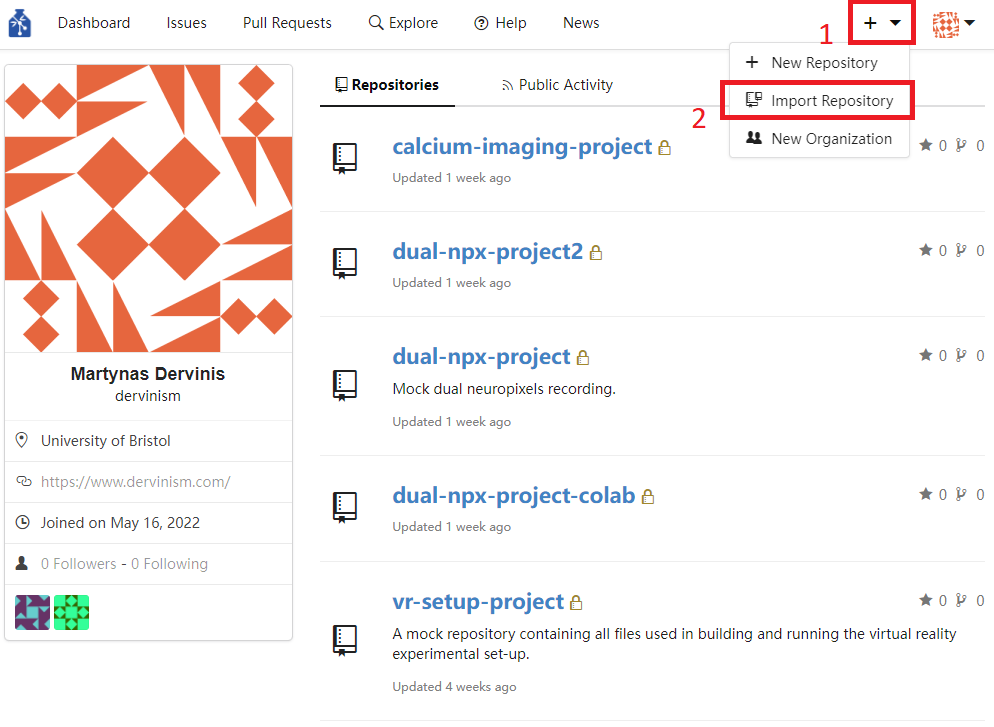
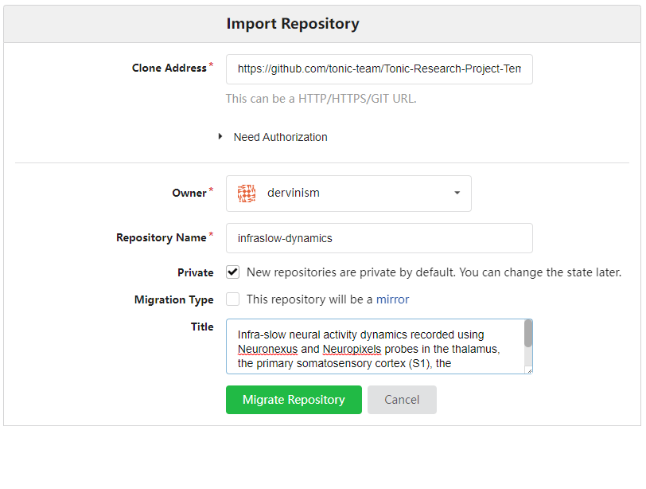
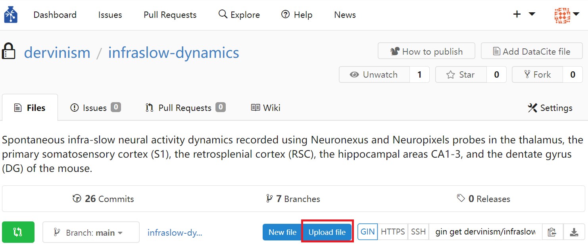

Bristol GIN for Silicon Probe Data
Contents
Bristol GIN for Silicon Probe Data#
Create Repository to Store Your Research Data#
The example repository is organised according to the Tonic Research Project Template. You can organise your data according to this template by following a few simple steps. First, go to your GIN web page (GIN-domain-name/your-username) and click on the Import Repository button.
{kind=link}
Figure 1. Import Repository
You should be brought to the Import Repository page. As a Clone Address specify the Tonic template github page: https://github.com/tonic-team/Tonic-Research-Project-Template. Give the name to your repository and a concise description of the kind of data stored in the repository. In my case I am creating a repository containing dual silicon probe recordings of spontaneous neural activity in various brain areas of the mouse. Then click the green Migrate Repository button.
{kind=link}
Figure 2. Describe Your New Repository
You should see the template contents cloned under your new repository name.
Now open the terminal and navigate to the folder on your local file system where you would like to keep your research data. Download the remote repository to that location by typing this command:
gin get dervinism/infraslow-dynamics
You can now use this empty repository to store all of your newly acquired research project data and documents. If you already have data that was generated in the past, you can copy it here.
Set up Your Research Data Repository#
I am going to copy old research data to this newly created repository and make certain rearrangements within the existing folder structure to make it more suitable for already existing data structures created while carrying out my research project. I am also going to use mock research data to reduce the size of the repository so that repository management actions can be performed fast for this tutorial. The mock data repository is available to download on GIN. You can download it by typing the line below in your terminal:
gin get dervinism/mock-ecephys-project
cd mock-ecephys-project
gin get-content
Once downloaded, open the repository and copy the contents of the repository except for the .git folder. Delete the contents of the infraslow-dynamics repository and paste the copied contents from the mock-ecephys-project repository. Edit the README file accordingly to reflect the new name of the repository and other info.
Record Your Local Research Data Repository Changes#
Once your repository is set up (data folders organised, data files placed in right locations, etc.), you should register the state of your repository with the local version control system. By doing so you create the image of your repository that can always be reverted to in the future in case the need to do so arises. When commiting local repository changes to your version control system you typically provide a concise message describing the changes. By convention, the message length should not exceed 50 characters. As for the first record, we type:
gin commit . -m "Initial commit"
This action would commit all changes locally. Dot means that the command is executed on the contents of the current working directory; therefore, make sure that you are inside the root folder of your repository when carrying out this action. The flag -m is used to pass the commit message. When you make new changes to the repository, whether editing text files or manipulating your data files, you should commit these changes periodically to your local versioning system by executing in the terminal a similar command:
gin commit . -m "A message describing new changes"
Update Your Remote Research Data Repository#
All of the changes that were commited previously, were done so locally. We were working on a local copy of our research data repository. In order to update our remote research data respository, whether residing on Bristol GIN or on the public GIN server, we need to push our local changes to the remote copy of our repository. We do so by simply executing the line below in the terminal:
gin upload .
Any new files and any new changes to exisiting files should now be uploaded onto the remote repository and we should be able to see them if we navigated to the repository web page. Alternatively, we can also update the remote repository using the web interface. We do so by navigating to the repository webpage and clicking the blue Upload file button.
{kind=link}
Figure 3. Update Remote Repository via Web
The limitation of using the web interface is that every time you update your remote repository, you will be limited to uploading 100 files at a time with each file being no larger than 10 gigabytes. Therefore, it is more effecient/effective to use the command line tools which have none of these limitations.
When you use the web interface, you can specify the commit message title (no more than 50 characters by convention) and the commit message body (no more than 72 characters by convention).
Remove Content of Your Local Research Data Repository#
One advantage of using GIN for your data repository mangement is that you do not need to keep duplicate repositories in order to prevent accidental detrimental changes to your main repository. One reason for that is having version control system. The other reason is that you can safely remove the content of your local repository and replace it with pointers to original files. As a result you can save space on your local hard-drive. To remove the local content type the following line in your commend terminal:
gin remove-content
Local files larger than 10 megabytes should be replaced by symbolic links. In case you want to remove the content of specific files only, you can type:
gin remove-content <absolute or relative path to file or folder>
For example, to remove the raw research data from our silicon probe recording repository, we type:
gin remove-content 03_data/001_uol_neuronexus_exp_raw_derived
gin remove-content 03_data/002_uol_neuropixels_exp_raw_derived
To simply restore the file content type in
gin get-content
If you no longer need to work on your repository and its remote copy is up to date with the local copy, you can simply delete the local repository copy altogether. You should always be able to restore your repository and all of its contents on your local machine by executing these commands in your terminal:
gin get dervinism/mock-ecephys-project
cd mock-ecephys-project
gin get-content
Compress Raw Data#
Silicon probe recording raw data files take a lot of space, especially neuropixels recordings. Often these files consume most of the hard-disk space compared to any other files produced during the data processing. It is, therefore, advisable to compress them. The Internation Brain Laboratory has provided compression software for that purpose which is easy to use with instruction on how to install and compress your files provided here. Briefly, you can install it by typing in your terminal:
pip install mtscomp
Make sure you also have the required dependencies installed.
Once installed, the compression is straight forward. All you need is to specify the name of your binary file, number of recording channels, the sampling rate, and the binary data type as in the example below:
mtscomp <data-filename>.bin -n 385 -s 30000 -d int16
The compression software will automatically load <data-filename>.meta file and read the necessary metadata parameters about the data file. It will then produce <data-filename>.cbin compressed file and <data-filename>.ch json metadata file describing the compression parameters. These two files should be preserved while the original data binary file can be deleted. To restore the original file, type
mtsdecomp <data-filename>.cbin -o <data-filename>.bin
You can expect a three-fold reduction in the file size after the compression. So it is a good way to greatly reduce the size of your repositories.
Convert Your Data to Standardised Format#
In order to increase your research data’s adherence to the FAIR principles of scientific data management and, in particular, to increase the interoperability of your data and chances of it being reused beyond its original purpose of collection, it is highly advisable to convert your data into one of the more popular standard file formats for neuroscience data. One such format is the Neurodata Without Borders (NWB) which is highly suitable for most of the neurophysiology data. Programming interfaces in both Matlab and Python are available for converting your data. Here we are going to provide explanations of how you can convert your data in both programming languages. While showing you examples of that, we will continue our focus on the extracellular electrophysiology data.
Convert to NWB Using Matlab#
Install MatNWB Toolbox#
To begin with the Matlab demonstration, you would need to install MatNWB toolbox. To download the toolbox, type in your terminal:
git clone https://github.com/NeurodataWithoutBorders/matnwb.git
Move the downloaded repository to the folder where you keep your code libraries. Then type the following in the Matlab command line:
cd matnwb
addpath(genpath(pwd));
generateCore();
You can now start using MatNWB. MatNWB interface documentation can be accessed here.
Record Metadata#
We have prepared example repositories containing single session extracellular physiology recording data collected with Neuronexus and Neuropixels probes and Matlab scripts that would convert that data to NWB format. They can be used to familiarise with the Matlab NWB conversion scheme for spiking data combined with behavioural mesurements. Both conversion scripts are very similar and, thus, we will focus on the Neuropixels use case.
To donwload the Neuropixels repository, type in your terminal:
gin get dervinism/convert2nwbMatNpx
cd convert2nwbMatNpx
gin get-content
It will take some time to download the full repository. Once the download is complete you can open the convert2nwb.m file and and execute it right away. The script would load derived spiking and behavioural data from convert2nwbMatNpx/npx_derived_data/M200324_MD/M200324_MD.mat file, convert it to the NWB format, and save it inside convert2nwbMatNpx/inside npx_derived_data_nwb folder as ecephys_session_01.nwb file.
We will now analyse the conversion script in more detail. The script starts by executing three parameter files to initiate the conversion environment. The first parameter file nwbParams.m contains the most general type of parameters that apply to all animals and recording sessions of the experiment, like:
projectName = 'Brainwide Infraslow Activity Dynamics';
experimenter = 'Martynas Dervinis';
institution = 'University of Leicester';
publications = {};
lab = 'Michael Okun lab';
dataset = 'neuropixels';
videoFrameRate = 25; % Hz
The names of most of these parameters are self-explanatory. The videoFramRate variable contains the camera fram rate recording the animal’s pupil. There are also input and output folders defined at the bottom of the parameter file. They include:
rawDataFolderwhich contains probe recording channel maps and unit waveform files;derivedDataFolderwhich contains processed spiking data;derivedDataFolderNWBwhihc is the output folder where converted NWB files are saved.
As the name implies, nwbAnimalParams.m file contains parameters specific to a particular animal and common to all recording sessions for that animal. They include:
animalID = 'M200324_MD';
dob = '20200206'; % yyyymmdd
...
strain = 'C57BL/6J';
sex = 'M';
species = 'Mus musculus';
weight = [];
description = '025'; % Animal testing order.
Names of these parameters are self-explanatory. The script also defines input and output folders specifically for the animal of interest.
The nwbSessionParams.m file stores parameters about recording sessions. Some of these parameters are defined at the top of the file explicitly for each individual session and some even explicitly for each recording probe, like:
sessionID = {'20200324161349'};
sessionDescription = {'anaesthesia'};
sessionNotes = {'...'};
endCh{1}{1} = [88 117 149 342 384]; % Corresponding probe end channels starting from the tip of the probe. Corresponding and previous end channels are used to work out probe channels that reside in the corresponding brain area.
endCh{1}{2} = [41 091 138 217 304 384];
The for loop that follows next sets the remaining parameters that are common across recording sessions, like electrodeName, electrodeDescription, electrodeManufacturer, nShanks (number of probe shanks), nChannelsPerShank (number of recording channels per shank), nCh (total number of probe channels), areas (brain areas that probes span), electrodeCoordinates (electrode insertion coordinates), electrodeLabel, and electrodeImplantationType (i.e., acute or chronic).
Most of the parameters defined in the three parameter files comprise metadata. The way you define your metadata may be different. For example, you may have your own custom scripts that contain the metadata or you may store your metadata in files organised according to one of standard neuroscientific metadata formats like odML or DANDI Schema. Whichever your preference is, this part of the NWB conversion procedure will vary depending on the individual researcher.
The initialisation process is completed by intialising the Matlab NWB classes by calling
generateCore;
within the convert2nwb.m script file.
The conversion process then goes through every recording session and generates NWB files individually for each session inside the for loop. We start by creating an NWBfile object and defining session metadata:
% Assign NWB file fields
nwb = NwbFile( ...
'session_description', sessionDescription{iSess},...
'identifier', [animalID '_' sessionID{iSess}], ...
'session_start_time', sessionStartTime{iSess}, ...
'general_experimenter', experimenter, ... % optional
'general_session_id', sessionID{iSess}, ... % optional
'general_institution', institution, ... % optional
'general_related_publications', publications, ... % optional
'general_notes', sessionNotes{iSess}, ... % optional
'general_lab', lab); % optional
Each file must have session_description, identifier, and session_start_time parameters. We then initialise the Subject object and the metadata it contains:
% Create subject object
subject = types.core.Subject( ...
'subject_id', animalID, ...
'age', age, ...
'description', description, ...
'species', species, ...
'sex', sex);
nwb.general_subject = subject;
Construct Electrodes Table#
Storing extracellular electrophysiology data is not possible without defining the electrodes table which is a DynamicTable object. We do it first by creating a Matlab table array using a code wrapped inside the createElectrodeTable function. We put the table generation code inside the function, because it is going to be reused for each probe. The function call for probe 1 is executed by the code below:
% Create electrode tables: Info about each recording channel
input.iElectrode = 1;
input.electrodeDescription = electrodeDescription{iSess};
input.electrodeManufacturer = electrodeManufacturer{iSess};
input.nShanks = nShanks{iSess};
input.nChannelsPerShank = nChannelsPerShank{iSess};
input.electrodeLocation = electrodeLocation{iSess};
input.electrodeCoordinates = electrodeCoordinates{iSess};
input.sessionID = sessionID{iSess};
input.electrodeLabel = electrodeLabel{iSess};
if probeInserted{iSess}{input.iElectrode} && ~isempty(endCh{iSess}{1})
tbl1 = createElectrodeTable(nwb, input);
else
tbl1 = [];
end
The table array for the probe 1 is then created within the function:
% Create a table with given column labels
variables = {'channel_id', 'channel_local_index', 'x', 'y', 'z', 'imp', 'location', 'filtering', 'group', 'channel_label', 'probe_label'};
tbl = cell2table(cell(0, length(variables)), 'VariableNames', variables);
% Register the probe device
device = types.core.Device(...
'description', input.electrodeDescription{iEl}, ...
'manufacturer', input.electrodeManufacturer{iEl} ...
);
nwb.general_devices.set(['probe' num2str(iEl)], device);
for iShank = 1:nSh{iEl}
% Register a shank electrode group (only one because this is a single shank probe)
electrode_group = types.core.ElectrodeGroup( ...
'description', ['electrode group for probe' num2str(iEl)], ...
'location', input.electrodeLocation{iEl}{end}, ...
'device', types.untyped.SoftLink(device), ...
'position', table(input.electrodeCoordinates{iEl}(1,1), ...
input.electrodeCoordinates{iEl}(1,2), ...
input.electrodeCoordinates{iEl}(1,3), ...
'VariableNames',{'x','y','z'}) ...
);
nwb.general_extracellular_ephys.set(['probe' num2str(iEl)], electrode_group);
group_object_view = types.untyped.ObjectView(electrode_group);
% Populate the electrode table
for iCh = 1:nCh{iEl}
if iCh < 10
channelID = str2double([input.sessionID num2str(iEl) '00' num2str(iCh)]);
elseif iCh < 99
channelID = str2double([input.sessionID num2str(iEl) '0' num2str(iCh)]);
else
channelID = str2double([input.sessionID num2str(iEl) num2str(iCh)]);
end
channel_label = ['probe' num2str(iEl) 'shank' num2str(iShank) 'elec' num2str(iCh)];
tbl = [tbl; ...
{channelID, iCh, input.electrodeCoordinates{iEl}(iCh, 1), input.electrodeCoordinates{iEl}(iCh, 2), input.electrodeCoordinates{iEl}(iCh, 3),...
NaN, input.electrodeLocation{iEl}{iCh}, 'unknown', group_object_view, channel_label, input.electrodeLabel{iEl}}]; %#ok<*AGROW>
end
end
The code initialises an empty table with given column labels. It then records the probe Device (which is an object itself) inside the NWBfile object. Next, we create an ElectrodeGroup object which is used to define electrode groupings within the probe. In our case we have a single shank probe and, therefore, we define all recording channels to be part of a single group. Though, grouping on some other basis is possible. You may have noticed that the device property is set as a Softlink object which is used to link to an already existing NWB object (in our case) or to an object within an NWB file using a path. Similarly, ElectrodeGroup is used to create an ObjectView object which works in a very similar way to the SoftLink object, and which is later used in constructing the electrodes table. The position property is a Matlab table array with columns being stereotaxic coordinates. Finally, the electrodes table is filled in channel by channel (rows) with channel subtables.
The same procedure is then repeated for the probe 2. Finally, the combined table array is then converted into a DynamicTable object using util.table2nwb function which also takes in the table description as the second argument:
tbl = [tbl1; tbl2];
electrode_table = util.table2nwb(tbl, 'all electrodes');
nwb.general_extracellular_ephys_electrodes = electrode_table;
Note
You can add any number of custom columns to a DynamicTable object and, therefore, you can expand an electrodes table object with any additional metadata you deem necessary.
Load and Initialise Spiking Data#
The next line of code loads processed spiking data from the Matlab MAT file by calling the getSpikes function:
[spikes, metadata, derivedData] = getSpikes(derivedData, animalID, sessionID{iSess}, tbl);
This is a custom function containing the loading algorithm that very much depends on the processed data structure stored inside the MAT file. I will not go into the detail of how the function runs as your own data is very likely to be structured differently. However, you are welcome to explore the code yourself as it commented generously. It will suffice to say that the function outputs the spikes variable which is a 1-by-n cell array with unit spike times in seconds, where n is the number of units. Moreover, the function also outputs the metadataTbl variable which is a Matlab table array with rows corresponding to individual clusters (units) and columns to various metadata types describing unit properties, like cluster_id, local_cluster_id, type, channel_index, channel_id, local_channel_id, rel_horz_position, rel_vert_position, isi_violations, isolation_distance, area, probe_id, and electrode_group. You can find the description of each of these properties in the getSpikes function definition.
Once the spike times are extracted, we convert them into VectorData and VectorIndex objects by executing the line below:
[spike_times_vector, spike_times_index] = util.create_indexed_column(spikes);
spike_times_vector.data property is simply a vector of spike times where unit spike times are consequtively arranged into this single vector grouped on a unit basis. Meanwhile, spike_times_index.data property is a vector of indices which are then used to index the end of corresponding unit spike times data (i.e., row breaks). In conjunction, VectorData and VectorIndex objects can be used to encode ragged arrays. Ragged arrays have rows with different number of columns. All units taken together and their spike times form such a ragged array which is illustrated in the figure below.
{kind=link}
Figure 4. Ragged Array
Original image taken from here.
Load Waveforms#
Before converting spiking data we load unit waveforms. The waveforms data can also be stored as a ragged array, even as a double-indexed one. You can find more information here on how to construct such arrays. In our case, the waveforms arrays are rather simple: we are only interested in average waveforms on the probe recording channel with the largest waveform amplitude. This data is stored in the waveformMeans variable which is a cell array of avarage waveforms with cells corresponding individual units. The variable is constructed after loading and reshaping the waveforms located inside the convert2nwbMatNpx/npx_raw_derived_data/M200324_MD/
% Load and reshape unit waveforms
...
for iWave = 1:numel(waveformMeans)
if isempty(waveformMeans{iWave})
waveformMeans{iWave} = nan(1,nWaveformSamples);
end
end
Construct Units Table#
In order to store spiking data and other related data, we construct the units table which is, like the electrodes table, a DynamicTable object. As such it supports addition of additional metadata columns. The code that constructs the units table is shown below:
nwb.units = types.core.Units( ...
'colnames', {'cluster_id','local_cluster_id','type',...
'peak_channel_index','peak_channel_id',... % Provide the column order. All column names have to be defined below
'local_peak_channel_id','rel_horz_pos','rel_vert_pos',...
'isi_violations','isolation_distance','area','probe_id',...
'electrode_group','spike_times','spike_times_index'}, ...
'description', 'Units table', ...
'id', types.hdmf_common.ElementIdentifiers( ...
'data', int64(0:length(spikes) - 1)), ...
'cluster_id', types.hdmf_common.VectorData( ...
'data', cell2mat(metadata{:,1}), ...
'description', 'Unique cluster id'), ...
'local_cluster_id', types.hdmf_common.VectorData( ...
'data', cell2mat(metadata{:,2}), ...
'description', 'Local cluster id on the probe'), ...
'type', types.hdmf_common.VectorData( ...
'data', metadata{:,3}, ...
'description', 'Cluster type: unit vs mua'), ...
'peak_channel_index', types.hdmf_common.VectorData( ...
'data', cell2mat(metadata{:,4}), ...
'description', 'Peak channel row index in the electrode table'), ...
'peak_channel_id', types.hdmf_common.VectorData( ...
'data', cell2mat(metadata{:,5}), ...
'description', 'Unique ID of the channel with the largest cluster waveform amplitude'), ...
'local_peak_channel_id', types.hdmf_common.VectorData( ...
'data', cell2mat(metadata{:,6}), ...
'description', 'Local probe channel with the largest cluster waveform amplitude'), ...
'rel_horz_pos', types.hdmf_common.VectorData( ...
'data', cell2mat(metadata{:,7})./1000, ...
'description', 'Probe-relative horizontal position in mm'), ...
'rel_vert_pos', types.hdmf_common.VectorData( ...
'data', cell2mat(metadata{:,8})./1000, ...
'description', 'Probe tip-relative vertical position in mm'), ...
'isi_violations', types.hdmf_common.VectorData( ...
'data', cell2mat(metadata{:,9}), ...
'description', 'Interstimulus interval violations (unit quality measure)'), ...
'isolation_distance', types.hdmf_common.VectorData( ...
'data', cell2mat(metadata{:,10}), ...
'description', 'Cluster isolation distance (unit quality measure)'), ...
'area', types.hdmf_common.VectorData( ...
'data', metadata{:,11}, ...
'description', ['Brain area where the unit is located. Internal thalamic ' ...
'nuclei divisions are not precise, because they are derived from unit locations on the probe.']), ...
'probe_id', types.hdmf_common.VectorData( ...
'data', metadata{:,12}, ...
'description', 'Probe id where the unit is located'), ...
'spike_times', spike_times_vector, ...
'spike_times_index', spike_times_index, ...
'electrode_group', types.hdmf_common.VectorData( ...
'data', metadata{:,13}, ...
'description', 'Recording channel groups'), ...
'waveform_mean', types.hdmf_common.VectorData( ...
'data', cell2mat(waveformMeans), ...
'description', ['Mean waveforms on the probe channel with the largest waveform amplitude. ' ...
'MUA waveforms are excluded. The order that waveforms are stored match the order of units in the unit table.']) ...
);
The property colnames specifies units table column names and should be used to indicate column order. The description property is simply used to describe what kind of information is stored in the table. When constructing the table you have to provide the id property which is the ElementIdentifiers list object containing indices starting with 0 and used to identify DynamicTable rows. Custom properties are passed in as VectorData objects with their own data and description properties. In the above code snippet these include cluster_id, local_cluster_id, type, peak_channel_index, peak_channel_id, local_peak_channel_id, rel_horz_pos, rel_vert_pos, isi_violations, isolation_distance, area, and probe_id. You can also pass in a few optional properties like electrode_group VectorData object which specifies an electrode group that each spike unit came from and electrodes DynamicTableRegion object used to reference the electrodes table containing the electrodes that each spike unit came from, as well as other properties. Finally, we also pass in the waveform_mean property containing a matrix of mean unit waveforms as a VectorData object. The latter property will not be one of the table columns as it is not listed in the colnames property but it will be accessible via dot indexing.
Note
VectorData objects should not have cell arrays of integers (cell arrays of strings are fine) as their data property. During the NWB conversion they are not going to be encoded properly and will generate an error. You can use Matlab’s cell2mat function to convert them into regular number arrays.
Add Behavioural Module: Pupil Area Size#
We load pupil area size data from the same file containing processed spiking data. We then convert this data into a TimeSeries object which is designed to store any general purpose time series data. This object has a few mandatory properties, like data, data_unit, and starting_time_rate, and a few optional ones, like timestamps,control, control_description, and description. The data property can be stored as any 1-D, 2-D, 3-D, or 4-D array where the first dimension is time. We use it store our pupilAreaSize data vector. The data_unit property has to be a string, while the starting_time_rate property is a scalar of float32 type. The timestamps property should give data sampling times and should be stored as a unidimensional number array of float64 type. The control property is used for labeling data samples with integers. The length of this array should be the same as the length of the first data dimension representing time. In our case I am using integers 0 and 1 to mark acceptable quality data. The meaning of these labels is provided by the control_description property which is a cell array of strings with cells describing labels in the increasing order. The full code that converts the pupil area size data into the appropriate form is shown below:
pupilAreaSize = types.core.TimeSeries( ...
'data', pupilAreaSize, ...
'timestamps', videoFrameTimes, ...
'data_unit', 'pixels^2', ...
'starting_time_rate', videoFrameRate,...
'control', uint8(acceptableSamples),...
'control_description', {'low quality samples that should be excluded from analyses';...
'acceptable quality samples'},...
'description', ['Pupil area size over the recording session measured in pixels^2. ' ...
'Acceptable quality period starting and ending times are given by data_continuity parameter. ' ...
'The full data range can be divided into multiple acceptable periods.'] ...
);
pupilTracking = types.core.PupilTracking('TimeSeries', pupilAreaSize);
behaviorModule = types.core.ProcessingModule('description', 'contains behavioral data');
behaviorModule.nwbdatainterface.set('PupilTracking', pupilTracking);
As you will notice, our TimeSeries object is assigned to a PupilTracking object which can hold one or more of the TimeSeries objects. We then create a ProcessingModule container object to store the bahavioural data. The final line creates a nwbdatainterface.PupilTracking property with our PupilTracking object within the ProcessingModule object.
Add Behavioural Module: Total Facial Movement#
The facial movement data conversion process into appropriate form for NWB storage is almost identical to the conversion process applied to the pupil area size data. First, we load the data and store it inside the TimeSeries object. The steps are identical. Next, we store our TimeSeries object inside the BehavioralTimeSeries object designed for holding one or more TimeSeries objects:
behavioralTimeSeries = types.core.BehavioralTimeSeries('TimeSeries', totalFaceMovement);
We then create a nwbdatainterface.BehavioralTimeSeries property with our BehavioralTimeSeries object within the ProcessingModule container object:
behaviorModule.nwbdatainterface.set('BehavioralTimeSeries', behavioralTimeSeries);
Finally, we create the behaviour module within the NWBfile object:
nwb.processing.set('behavior', behaviorModule);
Save NWB File#
We call the nwbExport function to save our data in the NWB format:
if iSess < 10
nwbExport(nwb, [animalDerivedDataFolderNWB filesep 'ecephys_session_0' num2str(iSess) '.nwb']);
else
nwbExport(nwb, [animalDerivedDataFolderNWB filesep 'ecephys_session_' num2str(iSess) '.nwb']);
end
Read NWB File#
Now if you want to open the NWB file that you just saved in Matlab, you can issue a command
nwb2 = nwbRead('ecephys_session_01.nwb');
which will read the file passively. The action is fast and it does not load all of the data at once but rather make it readily accessible. This is useful as it allows you read data selectively without loading the entire file content into the computer memory.
If you want to read the entire unit table which has all unit spiking data and associated metadata, the easiest way is to issue a command
unitsTable = nwb2.units.loadAll.toTable();
which will convert the DynamicTable object into a Matlab table array. The latter is a common Matlab data type and can be manipulated easily using regular Matlab syntax and indexing.
In contrast, if you are interested in a single unit data, you can load it using the following line of code:
unitRow = nwb2.units.getRow(1);
To load only spiking data for the same unit the following line of code will do:
unitRowSpikeTimes = nwb2.units.getRow(1).spike_times{1};
If you want to load mean unit waveforms, the following line of code will load them as a floating-point number array:
unitsWaveforms = nwb2.units.waveform_mean.loadAll.data;
Meanwhile, behavioural data can be accessed by running the code below:
pupilAreaSize = nwb2.processing.get('behavior'). ...
nwbdatainterface.get('PupilTracking'). ...
timeseries.get('TimeSeries').data(:);
totalFacialMovement = nwb2.processing.get('behavior'). ...
nwbdatainterface.get('BehavioralTimeSeries'). ...
timeseries.get('TimeSeries').data(:);
Other associated behavioural properties can be accessed by replacing the data property by timestamps or control and so on.
Some metadata is often directly available as properties of the NWBfile object, like:
sessionDescription = nwb2.session_description;
Subject metadata is available via the command, for example:
animalID = nwb2.general_subject.subject_id;
While the electrode metadata can be accessed in the following way:
electrodesTable = nwb2.general_extracellular_ephys_electrodes.toTable();
electrodes table is a DynamicTable object and, therefore, methods of accessing it are the same as those discussed for accessing the units table. For more detailed account of how you can access and manipulate DynamicTable objects refer to an external MatNWB DynamicTables Tutorial.
Validate NWB File#
MatNWB does not provide its own NWB file validator. However, you can validate NWB files generated using Matlab in python. For instructions how to do it, refer to the corresponding PyNWB validation section of the tutorial.
Resources#
This section explained how you can use Matlab to convert your processed spiking and behavioural data into NWB files. It is not an exhaustive overview of Matnwb toolbox extracellular electrophysiology functionality. There are other potential use cases involving local field potentials (LFPs) and different types of behavioural data. There is a number of externally available tutorials covering some aspects of converting data obtained in extracellular electrophysiology experiments to the NWB file format using Matlab:
Convert to NWB Using Python#
Install PyNWB#
To convert your extracellular electrophysiology data, you will need to install PyNWB first. To do so, type in your terminal:
pip install -U pynwb